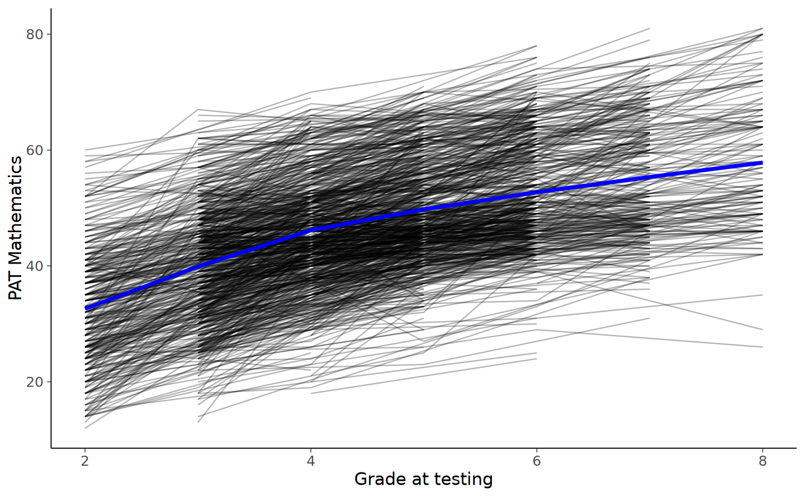

here::here("code", "_common.R") |>
source()
# Load packages
if (!requireNamespace("pacman")) install.packages("pacman")
pacman::p_load(DT, kableExtra, lme4, emmeans)75 Covariate indipendenti dal tempo
Prerequisiti
Concetti e Competenze Chiave
Preparazione del Notebook
75.1 Introduzione
Nell’ambito degli studi sui modelli di crescita lineare, una questione rilevante è capire in che modo le differenze individuali nelle traiettorie di cambiamento siano influenzate da altre variabili. Il presente capitolo si dedica all’integrazione di covariate invarianti nel tempo in questi modelli di crescita.
Le covariate invarianti nel tempo sono quelle variabili che rimangono costanti per ogni individuo durante il periodo di studio. Esempi tipici includono il genere, le condizioni sperimentali, lo stato socio-economico, e altri attributi che non subiscono modifiche nel tempo. In termini di modellazione, queste variabili vengono trattate come fattori indipendenti in un modello di regressione multipla, dove l’intercetta e la pendenza del modello di crescita lineare fungono da variabili dipendenti. Le covariate possono assumere vari formati: possono essere continue (es. età), ordinali (es. livelli di istruzione) o categoriche (es. genere).
Includere covariate invarianti nel tempo permette di esplorare come le differenze individuali nella traiettoria di crescita (sia in termini di intercetta che di pendenza) siano associate a queste variabili. Questo approccio offre la possibilità di indagare le ragioni sottostanti le diverse modalità di cambiamento tra gli individui.
- È importante sottolineare che, pur fornendo insights significativi, i risultati ottenuti da questi modelli non implicano relazioni causali. Questi modelli hanno limitazioni simili a quelle dei modelli di regressione standard in termini di inferenza causale.
- È cruciale considerare il contesto nel quale le covariate invarianti nel tempo sono state raccolte. Se queste provengono da un contesto sperimentale con assegnazione casuale, le inferenze potrebbero essere più robuste. Tuttavia, nel caso di dati osservazionali, è necessario un’attenta considerazione per evitare interpretazioni errate o eccessivamente assertive riguardo la causalità.
In sintesi, l’integrazione di covariate invarianti nel tempo nei modelli di crescita lineare fornisce una visione più dettagliata delle dinamiche individuali e del modo in cui vari fattori possono influenzare le traiettorie di crescita. Questo approccio arricchisce la comprensione dei fenomeni studiati, pur richiedendo un’interpretazione cauta e informata dei risultati ottenuti.
Per questo esempio considereremo i dati di prestazione matematica dal data set NLSY-CYA Long Data [si veda {cite:t}grimm2016growth]. Iniziamo a leggere i dati.
# set filepath for data file
filepath <- "https://raw.githubusercontent.com/LRI-2/Data/main/GrowthModeling/nlsy_math_long_R.dat"
# read in the text data file using the url() function
dat <- read.table(
file = url(filepath),
na.strings = "."
) # indicates the missing data designator
# copy data with new name
nlsy_math_long <- dat
# Add names the columns of the data set
names(nlsy_math_long) <- c(
"id", "female", "lb_wght",
"anti_k1", "math", "grade",
"occ", "age", "men",
"spring", "anti"
)
# view the first few observations in the data set
head(nlsy_math_long, 10)| id | female | lb_wght | anti_k1 | math | grade | occ | age | men | spring | anti | |
|---|---|---|---|---|---|---|---|---|---|---|---|
| <int> | <int> | <int> | <int> | <int> | <int> | <int> | <int> | <int> | <int> | <int> | |
| 1 | 201 | 1 | 0 | 0 | 38 | 3 | 2 | 111 | 0 | 1 | 0 |
| 2 | 201 | 1 | 0 | 0 | 55 | 5 | 3 | 135 | 1 | 1 | 0 |
| 3 | 303 | 1 | 0 | 1 | 26 | 2 | 2 | 121 | 0 | 1 | 2 |
| 4 | 303 | 1 | 0 | 1 | 33 | 5 | 3 | 145 | 0 | 1 | 2 |
| 5 | 2702 | 0 | 0 | 0 | 56 | 2 | 2 | 100 | NA | 1 | 0 |
| 6 | 2702 | 0 | 0 | 0 | 58 | 4 | 3 | 125 | NA | 1 | 2 |
| 7 | 2702 | 0 | 0 | 0 | 80 | 8 | 4 | 173 | NA | 1 | 2 |
| 8 | 4303 | 1 | 0 | 0 | 41 | 3 | 2 | 115 | 0 | 0 | 1 |
| 9 | 4303 | 1 | 0 | 0 | 58 | 4 | 3 | 135 | 0 | 1 | 2 |
| 10 | 5002 | 0 | 0 | 4 | 46 | 4 | 2 | 117 | NA | 1 | 4 |
nlsy_math_long |>
ggplot(
aes(grade, math, group = id)
) +
geom_line(alpha = 0.3) + # add individual line with transparency
stat_summary( # add average line
aes(group = 1),
fun = mean,
geom = "line",
linewidth = 1.5,
color = "blue"
) +
labs(x = "Grade at testing", y = "PAT Mathematics") 
Per ottenere una visione più dettagliata dei cambiamenti a livello individuale, possiamo selezionare casualmente un campione di 20 individui e registrare, per ciascuno di essi, l’evoluzione dei loro punteggi in matematica nel tempo.
# sample 20 ids
people <- unique(nlsy_math_long$id) %>% sample(20)
# do separate graph for each individual
nlsy_math_long %>%
filter(id %in% people) %>% # filter only sampled cases
ggplot(aes(grade, math, group = 1)) +
geom_line() +
facet_wrap(~id) + # a graph for each individual
labs(x = "Grade at testing", y = "PAT Mathematics") Per semplicità, leggiamo gli stessi dati in formato wide da un file.
# set filepath for data file
filepath <- "https://raw.githubusercontent.com/LRI-2/Data/main/GrowthModeling/nlsy_math_wide_R.dat"
# read in the text data file using the url() function
dat <- read.table(
file = url(filepath),
na.strings = "."
) # indicates the missing data designator
# copy data with new name
nlsy_math_wide <- dat
# Give the variable names
names(nlsy_math_wide) <- c(
"id", "female", "lb_wght", "anti_k1",
"math2", "math3", "math4", "math5", "math6", "math7", "math8",
"age2", "age3", "age4", "age5", "age6", "age7", "age8",
"men2", "men3", "men4", "men5", "men6", "men7", "men8",
"spring2", "spring3", "spring4", "spring5", "spring6", "spring7", "spring8",
"anti2", "anti3", "anti4", "anti5", "anti6", "anti7", "anti8"
)
# view the first few observations (and columns) in the data set
head(nlsy_math_wide[, 1:11], 10)| id | female | lb_wght | anti_k1 | math2 | math3 | math4 | math5 | math6 | math7 | math8 | |
|---|---|---|---|---|---|---|---|---|---|---|---|
| <int> | <int> | <int> | <int> | <int> | <int> | <int> | <int> | <int> | <int> | <int> | |
| 1 | 201 | 1 | 0 | 0 | NA | 38 | NA | 55 | NA | NA | NA |
| 2 | 303 | 1 | 0 | 1 | 26 | NA | NA | 33 | NA | NA | NA |
| 3 | 2702 | 0 | 0 | 0 | 56 | NA | 58 | NA | NA | NA | 80 |
| 4 | 4303 | 1 | 0 | 0 | NA | 41 | 58 | NA | NA | NA | NA |
| 5 | 5002 | 0 | 0 | 4 | NA | NA | 46 | NA | 54 | NA | 66 |
| 6 | 5005 | 1 | 0 | 0 | 35 | NA | 50 | NA | 60 | NA | 59 |
| 7 | 5701 | 0 | 0 | 2 | NA | 62 | 61 | NA | NA | NA | NA |
| 8 | 6102 | 0 | 0 | 0 | NA | NA | 55 | 67 | NA | 81 | NA |
| 9 | 6801 | 1 | 0 | 0 | NA | 54 | NA | 62 | NA | 66 | NA |
| 10 | 6802 | 0 | 0 | 0 | NA | 55 | NA | 66 | NA | 68 | NA |
Specifichiamo il modello SEM (si noti che, anche in questo caso, la scrittura del modello può essere semplificata usando la funzione growth).
I covarianti invarianti nel tempo valutati qui includono lb_wght, una variabile dicotomica codificata come dummy che indica se il bambino aveva un peso alla nascita normale (codificato 0) o basso (codificato 1), e anti_k1, una variabile continua con valori che variano da 0 a 8 indicando il grado in cui il bambino manifestava comportamenti antisociali all’asilo o in prima elementare (punteggi più alti indicano un comportamento più antisociale).
#writing out linear growth model with tic in full SEM way
lg_math_tic_lavaan_model <- '
#latent variable definitions
#intercept
eta1 =~ 1*math2+
1*math3+
1*math4+
1*math5+
1*math6+
1*math7+
1*math8
#linear slope
eta2 =~ 0*math2+
1*math3+
2*math4+
3*math5+
4*math6+
5*math7+
6*math8
#factor variances
eta1 ~~ eta1
eta2 ~~ eta2
#factor covariance
eta1 ~~ eta2
#manifest variances (set equal by naming theta)
math2 ~~ theta*math2
math3 ~~ theta*math3
math4 ~~ theta*math4
math5 ~~ theta*math5
math6 ~~ theta*math6
math7 ~~ theta*math7
math8 ~~ theta*math8
#latent means (freely estimated)
eta1 ~ 1
eta2 ~ 1
#manifest means (fixed to zero)
math2 ~ 0*1
math3 ~ 0*1
math4 ~ 0*1
math5 ~ 0*1
math6 ~ 0*1
math7 ~ 0*1
math8 ~ 0*1
#Time invariant covaraite
#regression of time-invariant covariate on intercept and slope factors
eta1 ~ lb_wght + anti_k1
eta2 ~ lb_wght + anti_k1
#variance of TIV covariates
lb_wght ~~ lb_wght
anti_k1 ~~ anti_k1
#covariance of TIV covariates
lb_wght ~~ anti_k1
#means of TIV covariates (freely estimated)
lb_wght ~ 1
anti_k1 ~ 1
' #end of model definitionAdattiamo il modello ai dati.
lg_math_tic_lavaan_fit <- sem(lg_math_tic_lavaan_model,
data = nlsy_math_wide,
meanstructure = TRUE,
estimator = "ML",
missing = "fiml"
)Esaminiamo la soluzione ottenuta.
summary(lg_math_tic_lavaan_fit, fit.measures = TRUE) |>
print()lavaan 0.6-19 ended normally after 110 iterations
Estimator ML
Optimization method NLMINB
Number of model parameters 21
Number of equality constraints 6
Number of observations 933
Number of missing patterns 61
Model Test User Model:
Test statistic 220.221
Degrees of freedom 39
P-value (Chi-square) 0.000
Model Test Baseline Model:
Test statistic 892.616
Degrees of freedom 36
P-value 0.000
User Model versus Baseline Model:
Comparative Fit Index (CFI) 0.788
Tucker-Lewis Index (TLI) 0.805
Robust Comparative Fit Index (CFI) 0.920
Robust Tucker-Lewis Index (TLI) 0.926
Loglikelihood and Information Criteria:
Loglikelihood user model (H0) -9785.085
Loglikelihood unrestricted model (H1) -9674.975
Akaike (AIC) 19600.171
Bayesian (BIC) 19672.747
Sample-size adjusted Bayesian (SABIC) 19625.108
Root Mean Square Error of Approximation:
RMSEA 0.071
90 Percent confidence interval - lower 0.062
90 Percent confidence interval - upper 0.080
P-value H_0: RMSEA <= 0.050 0.000
P-value H_0: RMSEA >= 0.080 0.046
Robust RMSEA 0.100
90 Percent confidence interval - lower 0.000
90 Percent confidence interval - upper 0.183
P-value H_0: Robust RMSEA <= 0.050 0.218
P-value H_0: Robust RMSEA >= 0.080 0.654
Standardized Root Mean Square Residual:
SRMR 0.097
Parameter Estimates:
Standard errors Standard
Information Observed
Observed information based on Hessian
Latent Variables:
Estimate Std.Err z-value P(>|z|)
eta1 =~
math2 1.000
math3 1.000
math4 1.000
math5 1.000
math6 1.000
math7 1.000
math8 1.000
eta2 =~
math2 0.000
math3 1.000
math4 2.000
math5 3.000
math6 4.000
math7 5.000
math8 6.000
Regressions:
Estimate Std.Err z-value P(>|z|)
eta1 ~
lb_wght -2.716 1.294 -2.099 0.036
anti_k1 -0.551 0.232 -2.369 0.018
eta2 ~
lb_wght 0.625 0.333 1.873 0.061
anti_k1 -0.019 0.059 -0.327 0.743
Covariances:
Estimate Std.Err z-value P(>|z|)
.eta1 ~~
.eta2 -0.078 1.145 -0.068 0.945
lb_wght ~~
anti_k1 0.007 0.014 0.548 0.584
Intercepts:
Estimate Std.Err z-value P(>|z|)
.eta1 36.290 0.497 73.052 0.000
.eta2 4.315 0.122 35.420 0.000
.math2 0.000
.math3 0.000
.math4 0.000
.math5 0.000
.math6 0.000
.math7 0.000
.math8 0.000
lb_wght 0.080 0.009 9.031 0.000
anti_k1 1.454 0.050 29.216 0.000
Variances:
Estimate Std.Err z-value P(>|z|)
.eta1 63.064 5.609 11.242 0.000
.eta2 0.713 0.326 2.185 0.029
.math2 (thet) 36.257 1.868 19.406 0.000
.math3 (thet) 36.257 1.868 19.406 0.000
.math4 (thet) 36.257 1.868 19.406 0.000
.math5 (thet) 36.257 1.868 19.406 0.000
.math6 (thet) 36.257 1.868 19.406 0.000
.math7 (thet) 36.257 1.868 19.406 0.000
.math8 (thet) 36.257 1.868 19.406 0.000
lb_wght 0.074 0.003 21.599 0.000
anti_k1 2.312 0.107 21.599 0.000
Interpretazione dei risultati per eta1 (Intercetta).
- lb_wght: L’effetto stimato di
lb_wghtsull’intercetta (eta1) è di -2.716 con uno standard error di 1.294. Questo valore di -2.716 indica che avere un peso alla nascita basso (codificato come 1) è associato ad una riduzione media di 2.716 unità nel valore iniziale dieta1, rispetto a un peso alla nascita normale (codificato come 0). Questo risultato è statisticamente significativo, come indicato dal valore di P (0.036), che è inferiore a 0.05. - anti_k1: Per
anti_k1, l’effetto stimato sull’intercetta è di -0.551 con uno standard error di 0.232. Questo suggerisce che per ogni unità di aumento nel punteggio di comportamento antisociale (anti_k1), il valore iniziale dieta1diminuisce in media di 0.551 unità. Anche questo risultato è statisticamente significativo, con un valore di P di 0.018.
Interpretazione dei risultati per eta2 (Pendenza).
- lb_wght: Per la pendenza (eta2), l’effetto stimato di
lb_wghtè di 0.625 con uno standard error di 0.333. Ciò indica che avere un peso alla nascita basso è associato ad un aumento medio di 0.625 unità nella pendenza dieta2, rispetto a un peso normale alla nascita. Tuttavia, questo risultato non è statisticamente significativo al livello del 5%, dato che il valore di P è 0.061, che è leggermente superiore a 0.05. - anti_k1: L’effetto stimato di
anti_k1sulla pendenza è molto piccolo (-0.019) e non è statisticamente significativo (valore di P = 0.743), suggerendo che non c’è una relazione chiara tra il comportamento antisociale in età precoce e il cambiamento nel tempo dieta2.
In sintesi, il peso alla nascita basso e i comportamenti antisociali sembrano influenzare negativamente il valore iniziale (intercetta) del costrutto misurato. Il peso alla nascita e i comportamenti antisociali non sembrano avere un impatto significativo sulla pendenza.
Creiamo un diagramma di percorso.
lg_math_tic_lavaan_fit |>
semPaths(
style = "lisrel",
whatLabels = "std", edge.label.cex = .6,
label.prop = 0.9, edge.label.color = "black", rotation = 4,
equalizeManifests = FALSE, optimizeLatRes = TRUE, node.width = 1.5,
edge.width = 0.5, shapeMan = "rectangle", shapeLat = "ellipse",
shapeInt = "triangle", sizeMan = 4, sizeInt = 2, sizeLat = 4,
curve = 2, unCol = "#070b8c"
)75.1.1 Valutare il contributo delle covariate
Una domanda comune in questo approccio per comprendere le associazioni tra covarianti invarianti nel tempo e traiettorie individuali è se l’aggiunta dei covarianti invarianti nel tempo sia stata utile. Nel framework di modellazione multilivello, i -2LL ottenuti quando si adattano modelli con e senza i covarianti invarianti nel tempo possono essere confrontati direttamente (se nessun partecipante è stato escluso dall’analisi a causa di dati incompleti sui covarianti invarianti nel tempo), fornendo un modo per valutare l’adattamento relativo del modello. Specificamente, possiamo esaminare la differenza tra i -2LL rispetto alla differenza nel numero di parametri stimati (o differenza nei gradi di libertà).
#writing out linear growth model with tic in full SEM way
lg_math_ticZERO_lavaan_model <- '
#latent variable definitions
#intercept
eta1 =~ 1*math2+
1*math3+
1*math4+
1*math5+
1*math6+
1*math7+
1*math8
#linear slope
eta2 =~ 0*math2+
1*math3+
2*math4+
3*math5+
4*math6+
5*math7+
6*math8
#factor variances
eta1 ~~ eta1
eta2 ~~ eta2
#factor covariance
eta1 ~~ eta2
#manifest variances (set equal by naming theta)
math2 ~~ theta*math2
math3 ~~ theta*math3
math4 ~~ theta*math4
math5 ~~ theta*math5
math6 ~~ theta*math6
math7 ~~ theta*math7
math8 ~~ theta*math8
#latent means (freely estimated)
eta1 ~ 1
eta2 ~ 1
#manifest means (fixed to zero)
math2 ~ 0*1
math3 ~ 0*1
math4 ~ 0*1
math5 ~ 0*1
math6 ~ 0*1
math7 ~ 0*1
math8 ~ 0*1
#Time invariant covaraite
#regression of time-invariant covariate on intercept and slope factors
#FIXED to 0
eta1 ~ 0*lb_wght + 0*anti_k1
eta2 ~ 0*lb_wght + 0*anti_k1
#variance of TIV covariates
lb_wght ~~ lb_wght
anti_k1 ~~ anti_k1
#covariance of TIV covaraites
lb_wght ~~ anti_k1
#means of TIV covariates (freely estimated)
lb_wght ~ 1
anti_k1 ~ 1
' #end of model definitionAdattiamo il modello ai dati.
lg_math_ticZERO_lavaan_fit <- sem(lg_math_ticZERO_lavaan_model,
data = nlsy_math_wide,
meanstructure = TRUE,
estimator = "ML",
missing = "fiml"
)Esaminiamo il risultato ottenuto.
summary(lg_math_ticZERO_lavaan_fit, fit.measures = TRUE) |>
print()lavaan 0.6-19 ended normally after 85 iterations
Estimator ML
Optimization method NLMINB
Number of model parameters 17
Number of equality constraints 6
Number of observations 933
Number of missing patterns 61
Model Test User Model:
Test statistic 234.467
Degrees of freedom 43
P-value (Chi-square) 0.000
Model Test Baseline Model:
Test statistic 892.616
Degrees of freedom 36
P-value 0.000
User Model versus Baseline Model:
Comparative Fit Index (CFI) 0.776
Tucker-Lewis Index (TLI) 0.813
Robust Comparative Fit Index (CFI) 0.917
Robust Tucker-Lewis Index (TLI) 0.931
Loglikelihood and Information Criteria:
Loglikelihood user model (H0) -9792.208
Loglikelihood unrestricted model (H1) -9674.975
Akaike (AIC) 19606.416
Bayesian (BIC) 19659.638
Sample-size adjusted Bayesian (SABIC) 19624.703
Root Mean Square Error of Approximation:
RMSEA 0.069
90 Percent confidence interval - lower 0.061
90 Percent confidence interval - upper 0.078
P-value H_0: RMSEA <= 0.050 0.000
P-value H_0: RMSEA >= 0.080 0.020
Robust RMSEA 0.097
90 Percent confidence interval - lower 0.000
90 Percent confidence interval - upper 0.173
P-value H_0: Robust RMSEA <= 0.050 0.208
P-value H_0: Robust RMSEA >= 0.080 0.646
Standardized Root Mean Square Residual:
SRMR 0.103
Parameter Estimates:
Standard errors Standard
Information Observed
Observed information based on Hessian
Latent Variables:
Estimate Std.Err z-value P(>|z|)
eta1 =~
math2 1.000
math3 1.000
math4 1.000
math5 1.000
math6 1.000
math7 1.000
math8 1.000
eta2 =~
math2 0.000
math3 1.000
math4 2.000
math5 3.000
math6 4.000
math7 5.000
math8 6.000
Regressions:
Estimate Std.Err z-value P(>|z|)
eta1 ~
lb_wght 0.000
anti_k1 0.000
eta2 ~
lb_wght 0.000
anti_k1 0.000
Covariances:
Estimate Std.Err z-value P(>|z|)
.eta1 ~~
.eta2 -0.181 1.150 -0.158 0.875
lb_wght ~~
anti_k1 0.007 0.014 0.548 0.584
Intercepts:
Estimate Std.Err z-value P(>|z|)
.eta1 35.267 0.355 99.229 0.000
.eta2 4.339 0.088 49.136 0.000
.math2 0.000
.math3 0.000
.math4 0.000
.math5 0.000
.math6 0.000
.math7 0.000
.math8 0.000
lb_wght 0.080 0.009 9.031 0.000
anti_k1 1.454 0.050 29.216 0.000
Variances:
Estimate Std.Err z-value P(>|z|)
.eta1 64.562 5.659 11.408 0.000
.eta2 0.733 0.327 2.238 0.025
.math2 (thet) 36.230 1.867 19.410 0.000
.math3 (thet) 36.230 1.867 19.410 0.000
.math4 (thet) 36.230 1.867 19.410 0.000
.math5 (thet) 36.230 1.867 19.410 0.000
.math6 (thet) 36.230 1.867 19.410 0.000
.math7 (thet) 36.230 1.867 19.410 0.000
.math8 (thet) 36.230 1.867 19.410 0.000
lb_wght 0.074 0.003 21.599 0.000
anti_k1 2.312 0.107 21.599 0.000
Generiamo il diagramma di percorso.
lg_math_ticZERO_lavaan_fit |>
semPaths(
style = "lisrel",
whatLabels = "std", edge.label.cex = .6,
label.prop = 0.9, edge.label.color = "black", rotation = 4,
equalizeManifests = FALSE, optimizeLatRes = TRUE, node.width = 1.5,
edge.width = 0.5, shapeMan = "rectangle", shapeLat = "ellipse",
shapeInt = "triangle", sizeMan = 4, sizeInt = 2, sizeLat = 4,
curve = 2, unCol = "#070b8c"
)
Eseguiamo il confronto tra i due modelli mediante il test del rapporto tra verosimiglianze.
lavTestLRT(lg_math_tic_lavaan_fit, lg_math_ticZERO_lavaan_fit) |>
print()
Chi-Squared Difference Test
Df AIC BIC Chisq Chisq diff RMSEA
lg_math_tic_lavaan_fit 39 19600 19673 220.22
lg_math_ticZERO_lavaan_fit 43 19606 19660 234.47 14.245 0.052395
Df diff Pr(>Chisq)
lg_math_tic_lavaan_fit
lg_math_ticZERO_lavaan_fit 4 0.006552 **
---
Signif. codes: 0 '***' 0.001 '**' 0.01 '*' 0.05 '.' 0.1 ' ' 1Nel nostro esempio, il -2LL per il modello di crescita lineare era 15.937 e il -2LL per il modello di crescita lineare con due predittori invarianti nel tempo (basso peso alla nascita e comportamenti antisociali) dell’intercetta e della pendenza era 15.923, una differenza di 14. La differenza nel numero di parametri stimati era (19 – 15) = 4. Quindi, il miglioramento dell’adattamento era significativo (χ2(4) = 14, p < .01), indicando che basso peso alla nascita e comportamenti antisociali erano predittori utili. Parallelamente alle differenze nei -2LL, le differenze in AIC e BIC hanno anche indicato un miglioramento nell’adattamento del modello (criteri di informazione più bassi indicano un migliore adattamento) quando i covarianti invarianti nel tempo erano inclusi nel modello.
Nel framework di modellazione delle equazioni strutturali, è tipico valutare l’adattamento globale (ad esempio, RMSEA, CFI, TLI); tuttavia, raramente l’aggiunta di covarianti invarianti nel tempo cambia significativamente questi indici. L’adattamento relativo dei modelli può essere informativo come nel framework di modellazione multilivello. Come sopra, le differenze nei -2LL (o χ2) possono essere calcolate per testare se l’inclusione dei covarianti invarianti nel tempo ha migliorato significativamente l’adattamento del modello. Si noti che, nel framework di modellazione delle equazioni strutturali, il modello di confronto (baseline) non è semplicemente un modello senza i covarianti invarianti nel tempo. Piuttosto, è un modello che include i covarianti invarianti nel tempo ma vincola i loro effetti sull’intercetta e sulla pendenza a 0.
75.2 Confronto con il modello misto
Eseguiamo ora l’analisi statistica utilizzando un modello misto con intercetta e pendenza casuale. Confronteremo un modello ridotto, che include solo l’effetto del tempo, con un modello completo che include le covariate esaminate in precedenza. Il modello completo include gli effetti principali delle covariate e l’interazione tra le covariate e il tempo.
Adattiamo il modello “completo”.
nlsy_math_long$grade_c2 <- nlsy_math_long$grade-2
fit2_lmer <- lmer(
math ~ 1 + grade_c2 + lb_wght + anti_k1 + I(grade_c2 * lb_wght) + I(grade_c2 * anti_k1) +
(1 + grade_c2 | id),
data = nlsy_math_long,
REML = FALSE,
na.action = na.exclude
)Esaminiamo i risultati ottenuti.
summary(fit2_lmer)Linear mixed model fit by maximum likelihood ['lmerMod']
Formula: math ~ 1 + grade_c2 + lb_wght + anti_k1 + I(grade_c2 * lb_wght) +
I(grade_c2 * anti_k1) + (1 + grade_c2 | id)
Data: nlsy_math_long
AIC BIC logLik deviance df.resid
15943.1 16000.2 -7961.6 15923.1 2211
Scaled residuals:
Min 1Q Median 3Q Max
-3.07986 -0.52517 -0.00867 0.53079 2.53455
Random effects:
Groups Name Variance Std.Dev. Corr
id (Intercept) 63.0653 7.941
grade_c2 0.7141 0.845 -0.01
Residual 36.2543 6.021
Number of obs: 2221, groups: id, 932
Fixed effects:
Estimate Std. Error t value
(Intercept) 36.28983 0.49630 73.120
grade_c2 4.31521 0.12060 35.782
lb_wght -2.71621 1.29359 -2.100
anti_k1 -0.55087 0.23246 -2.370
I(grade_c2 * lb_wght) 0.62463 0.33314 1.875
I(grade_c2 * anti_k1) -0.01930 0.05886 -0.328
Correlation of Fixed Effects:
(Intr) grd_c2 lb_wgh ant_k1 I(_2*l
grade_c2 -0.529
lb_wght -0.194 0.096
anti_k1 -0.671 0.358 -0.025
I(grd_2*l_) 0.091 -0.168 -0.532 0.026
I(gr_2*a_1) 0.343 -0.660 0.026 -0.529 -0.055
optimizer (nloptwrap) convergence code: 0 (OK)
Model failed to converge with max|grad| = 0.00577269 (tol = 0.002, component 1)Adattiamo un modello misto vincolato senza covariate, utilizzando un modello con intercetta e pendenza casuale.
fit3_lmer <- lmer(
math ~ 1 + grade_c2 + (1 + grade_c2 | id),
data = nlsy_math_long,
REML = FALSE,
na.action = na.exclude
)Confrontiamo i due modelli utilizzando il test del rapporto di verosimiglianza.
anova(fit2_lmer, fit3_lmer) |>
print()Data: nlsy_math_long
Models:
fit3_lmer: math ~ 1 + grade_c2 + (1 + grade_c2 | id)
fit2_lmer: math ~ 1 + grade_c2 + lb_wght + anti_k1 + I(grade_c2 * lb_wght) + I(grade_c2 * anti_k1) + (1 + grade_c2 | id)
npar AIC BIC logLik deviance Chisq Df Pr(>Chisq)
fit3_lmer 6 15949 15984 -7968.7 15937
fit2_lmer 10 15943 16000 -7961.6 15923 14.245 4 0.006552 **
---
Signif. codes: 0 '***' 0.001 '**' 0.01 '*' 0.05 '.' 0.1 ' ' 1La differenza nei -2LL tra questi due modelli era 14, con una differenza di 4 gradi di libertà, χ2(4) = 14, p < .01. Questa differenza è identica a quella ottenuta confrontando i modelli nel framework di modellazione LGM. Giungiamo alla stessa conclusione riguardo l’importanza del basso peso alla nascita e dei comportamenti antisociali nel framework di modellazione multilivello e quando esaminiamo le differenze nelle traiettorie matematiche dei bambini.
75.3 Considerazioni Importanti
La maggior parte delle ricerche nel modello di crescita cerca di comprendere come le caratteristiche interpersonali (ovvero, i covarianti invarianti nel tempo) siano associate a differenze interpersonali nei cambiamenti intrapersonali catturati dai dati longitudinali. Nel nostro esempio illustrativo, ci siamo limitati a due covarianti invarianti nel tempo per semplicità. Tuttavia, è possibile includere contemporaneamente nel modello diversi covarianti invarianti nel tempo e le interazioni tra di essi. Come in tutte le analisi di regressione, è essenziale un’adeguata scala e centratura dei covarianti invarianti nel tempo per ottenere stime di parametri sostanzialmente significative. Tutte le pratiche comuni nella regressione, come l’esame delle interazioni (moderazione) tra i covarianti invarianti nel tempo, relazioni non lineari e test di mediazione, sono possibili e implementate in modi tipici. Ad esempio, è possibile calcolare variabili prodotto, includerle nel dataset e inserirle come predittori aggiuntivi per esaminare effetti interattivi. Inoltre, gli effetti dei covarianti invarianti nel tempo possono essere aggiunti al modello in modo gerarchico per isolare se il loro inserimento ha migliorato significativamente l’adattamento del modello (simile all’esame del cambiamento significativo in R^2).
75.3.1 Varianza Spiegata
Oltre a valutare l’importanza dei covarianti invarianti nel tempo, i ricercatori vogliono anche sapere quanto della varianza nell’intercetta e nella pendenza sia stata spiegata dai covarianti invarianti nel tempo. In altre parole, quale proporzione delle differenze interpersonali nell’intercetta e nelle pendenze è stata spiegata dai covarianti invarianti nel tempo. Nei framework di modellazione multilivello e di equazioni strutturali, è possibile confrontare le stime di varianza dell’intercetta e della pendenza ottenute in modelli con e senza covarianti invarianti nel tempo. Nel nostro esempio, ad esempio, la stima della varianza dell’intercetta era 64.562 per il modello di crescita lineare senza covarianti invarianti nel tempo e 63.064 quando il basso peso alla nascita e i comportamenti antisociali erano inclusi come covarianti invarianti nel tempo. La differenza tra le varianze stimate era di 1.498. Convertendo questa differenza in una proporzione della varianza originale, troviamo che i covarianti invarianti nel tempo hanno spiegato lo 0.023 (1.498/64.562) ovvero il 2.3% delle differenze interpersonali nell’intercetta. Calcoli simili per la pendenza hanno prodotto una varianza spiegata dello 0.027 (2.7%).
75.3.2 Coefficienti Standardizzati
Nell’ambito della ricerca, oltre alla valutazione della varianza spiegata, può essere utile calcolare i coefficienti standardizzati. Questi aiutano a determinare l’importanza di ciascun predittore e funzionano come una misura della grandezza dell’effetto. I coefficienti di regressione di secondo livello (percorsi), che partono dai covarianti invarianti nel tempo verso l’intercetta e la pendenza, sono inizialmente non standardizzati. Per ottenere i coefficienti standardizzati, è necessario moltiplicare il coefficiente non standardizzato per il rapporto tra la deviazione standard del predittore (cioè, il covariante invariante nel tempo) e quella del risultato (cioè, l’intercetta o la pendenza).
La formula generale per il calcolo di un coefficiente standardizzato è:
\[ \beta^* = \frac{b \times \sigma_{\text{predittore}}}{\sigma_{\text{risultato}}}, \]
dove:
- \(\beta^*\) rappresenta il coefficiente standardizzato.
- \(b\) è il coefficiente non standardizzato.
- \(\sigma_{\text{predittore}}\) è la deviazione standard del predittore, come i comportamenti antisociali nel nostro caso.
- \(\sigma_{\text{risultato}}\) è la deviazione standard del risultato, come l’intercetta nel nostro caso.
Applicando questa formula, il coefficiente standardizzato per l’effetto dei comportamenti antisociali sull’intercetta è dato da:
\[ \beta^* = \frac{-0.551 \times \sigma_{\text{anti\_k1}}}{\sqrt{63.065 + (0.080 \times \sigma_{\text{X1}} \times 0.080) + (-0.551 \times \sigma_{\text{anti\_k1}} \times -0.551) + 2 \times (0.080 \times \sigma_{\text{X1,anti\_k1}} \times -0.551)}} \]
Qui, \(\sigma_{\text{anti\_k1}}\) rappresenta la deviazione standard dei comportamenti antisociali, \(\sigma_{\text{X1}}\) è la deviazione standard di un altro predittore, se presente, e \(\sigma_{\text{X1,anti\_k1}}\) è la covarianza tra i due predittori.
In conclusione, il calcolo produce:
\[ -0.551 \times 2.312 / \sqrt{63.065 + (0.080 \times 0.074 \times 0.080) + (-0.551 \times 2.312 \times -0.551) + 2 \times (0.080 \times 0.007 \times -0.551)} = -0.105 \]
Quindi, l’effetto dei comportamenti antisociali sui punteggi di matematica di seconda elementare è risultato essere di piccola entità.
75.3.3 Riflessioni Conclusive
In questo capitolo, abbiamo esaminato il modello di crescita lineare con covarianti invarianti nel tempo, un modello spesso utilizzato per esaminare le differenze individuali nella crescita e nel cambiamento. L’uso di questo modello implica una serie di assunzioni. Innanzitutto, il modello presume l’invarianza della struttura del cambiamento per tutte le persone. Ciò significa che si assume che tutti i bambini, indipendentemente dai loro punteggi sui covarianti invarianti nel tempo, seguano una traiettoria di crescita lineare. Inoltre, abbiamo ipotizzato che la grandezza della varianza residua nell’intercetta e nella pendenza, così come la covarianza residua tra l’intercetta e la pendenza, siano le stesse per i bambini con valori diversi sui covarianti invarianti nel tempo.
Assumiamo anche che la varianza residua dei punteggi osservati sia equivalente per tutti i bambini. In altre parole, indipendentemente dai valori dei covarianti invarianti nel tempo, l’inadeguatezza del modello lineare è identica. Nel nostro esempio, abbiamo ipotizzato che la grandezza delle fluttuazioni annuali nelle prestazioni matematiche dei bambini con livelli inferiori o superiori di comportamento antisociale fosse equivalente. Dato che queste assunzioni potrebbero essere vere o meno, esse dovrebbero essere attentamente considerate prima di intraprendere tali analisi.
Nel prossimo capitolo, discuteremo i modelli di crescita per gruppi multipli che facilitano un esame approfondito di queste assunzioni per determinati tipi di covarianti invarianti nel tempo, in particolare quelli che sono variabili categoriche, ordinali o variabili continue che sono state categorizzate (ad esempio, tramite uno split mediano). Questo approccio permette una verifica più accurata e specifica delle ipotesi del modello in contesti diversi e con differenti tipologie di dati.